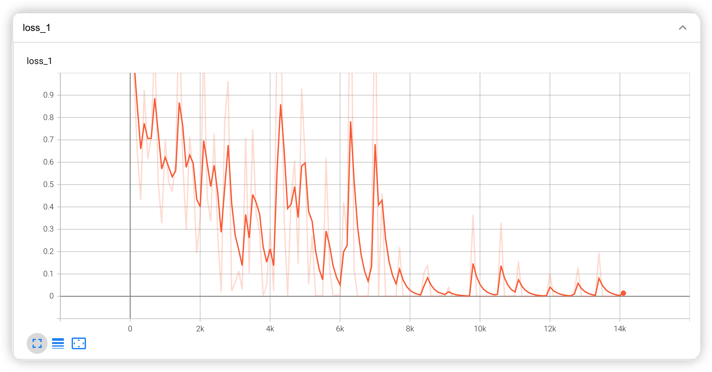
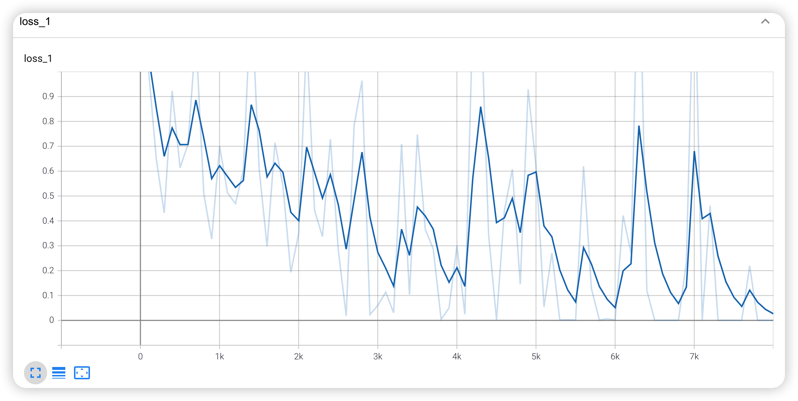
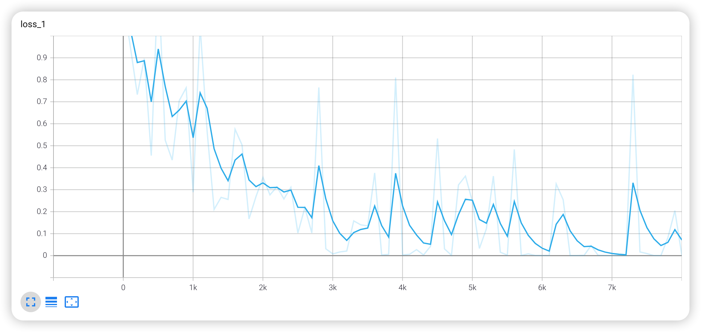
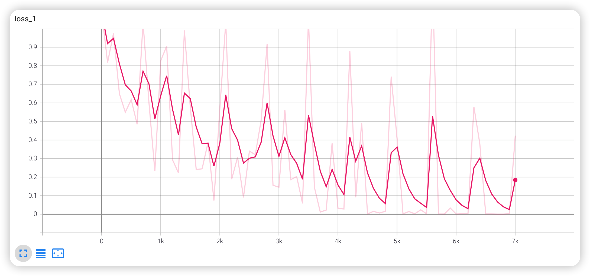

loss曲线
MaxSeqLength最大句子长度：30，batch_size一批处理个数：16，epoch轮数：10

loss曲线
MaxSeqLength最大句子长度：40，batch_size一批处理个数：16，epoch轮数：20

loss曲线
MaxSeqLength最大句子长度：50，batch_size一批处理个数：20，epoch轮数：20

loss曲线
MaxSeqLength最大句子长度：50，batch_size一批处理个数：16，epoch轮数：10
